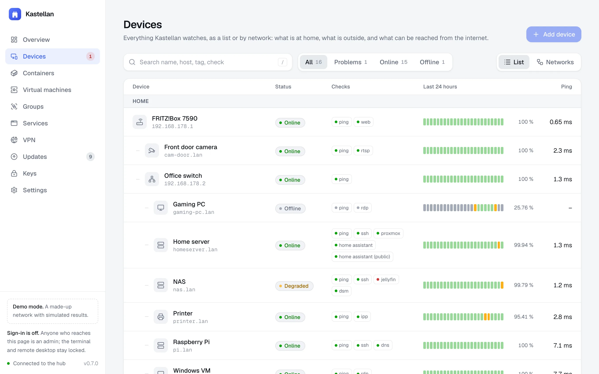
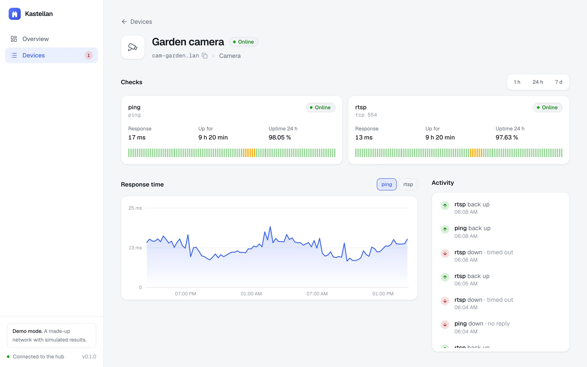

Every device on your network. One place to keep watch.
Kastellan watches your router, access points, servers, PCs, printers and cameras, and answers the first question of every evening: is everything all right? If not, it tells you what, since when, and what it hangs off.
The first line says whether anything needs you. Below it: exactly which check failed, how it failed, and for how long. Every device carries its last 24 hours as a strip; a hiccup at 3 a.m. is a bar you can point at.
Calm by default. A laptop that's asleep is offline, not an alarm. Only devices that should always be on can be "down".
Amber and red mean different things. A service that limps is amber; a server that's gone is red.

Networks
What's at home, and what's open to the internet
Switch the device list to its networks: home, a second site, the internet. The router sits on the boundary between home and the internet, and everything that can be reached from outside carries a globe, with each way in listed: a public name, and the device it leads to.
Found by itself. Networks come from the addresses, and the router from the way out; name them, or put a device in several, in config.yaml.
Search keeps the shape. Filtering fades the rest of the network instead of removing it.
Device
Every check, every hiccup
Ping, TCP ports and HTTP endpoints, each with its response time, how long it's been up and its uptime over an hour, a day or a week. The activity list shows exactly when something dropped out and came back.
Open the web interface of a router or camera straight from its page.
Restarts don't forget. "Down for 9 min" survives a hub update.

Plain files
One YAML file. No database.
Your network is described in config.yaml, a file you can read, diff and back up. Kastellan notices when it changes. The history is a CSV file per day, so you can open it in anything and delete old days by deleting files.
Kastellan is young. Today it watches; the plan is a single place to look after everything on the network, built on proven tools rather than reinventing them.
Works today
Reachability checksPing, TCP ports and HTTP for every device and service.
HistoryUptime and response time per check, kept as daily CSV files.
List and graphEvery device as a list, or as a graph of how it is connected.
Demo modeA made-up network to try everything without touching yours.
Next
Terminal in the browserSSH to any server, with xterm.js and keys the hub holds.
Remote desktopRDP and VNC with mouse and keyboard, through Apache Guacamole.
Device driversTalk to a FRITZ!Box, OpenWrt, printers: firmware, clients, settings.
Docker updatesWhich containers run an outdated image, and on which host.
RolesObservers see everything; only admins open sessions or change things.
Later
A small agentFor Windows, macOS and laptops away from home; it reports in, no open ports.
Wi-Fi & meshSee and keep network and Wi-Fi settings in sync across the mesh.
Backups & jobsConfig exports, full backups with restic, any task on a schedule.
Firmware & resourcesDisk, CPU and memory; firmware versions against the newest.
Security
It holds the keys, so it's built like a keep
A tool that can reach every device is the most valuable thing on the network. These are the rules it's designed around.
Behind your VPN
Kastellan is meant for the inside of your network, reached through WireGuard or Tailscale, never published to the internet.
Keys, not passwords
SSH keys or short-lived certificates for servers; mutual TLS for agents. Stored secrets are encrypted at rest.
Each device sets its limits
An agent decides on its own side what the hub may do: watch only, open a shell, share the screen.
No surprise updates
Updates are suggested, not installed. Automatically only when a known vulnerability meets a device that faces the internet.
Try it
Run the demo in a minute
With Docker, one command starts the demo. It shows a made-up home network with a day of history. Nothing on your network is contacted.
For your own network, use the compose.yaml with a config.yaml in config/. Or build it from a checkout with uv and Node.js.
Terminal
docker run --rm -p 8100:8100 -e KASTELLAN_DEMO=1 \
ghcr.io/andiwand/kastellan:0.1.0
# then open http://localhost:8100